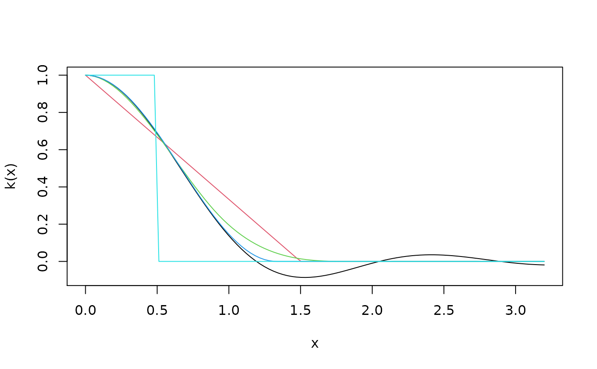

weightsAndrews.RdA set of functions implementing a class of kernel-based heteroskedasticity and autocorrelation consistent (HAC) covariance matrix estimators as introduced by Andrews (1991).
kernHAC(x, order.by = NULL, prewhite = 1, bw = bwAndrews, kernel = c("Quadratic Spectral", "Truncated", "Bartlett", "Parzen", "Tukey-Hanning"), approx = c("AR(1)", "ARMA(1,1)"), adjust = TRUE, diagnostics = FALSE, sandwich = TRUE, ar.method = "ols", tol = 1e-7, data = list(), verbose = FALSE, ...) weightsAndrews(x, order.by = NULL, bw = bwAndrews, kernel = c("Quadratic Spectral", "Truncated", "Bartlett", "Parzen", "Tukey-Hanning"), prewhite = 1, ar.method = "ols", tol = 1e-7, data = list(), verbose = FALSE, ...) bwAndrews(x, order.by = NULL, kernel = c("Quadratic Spectral", "Truncated", "Bartlett", "Parzen", "Tukey-Hanning"), approx = c("AR(1)", "ARMA(1,1)"), weights = NULL, prewhite = 1, ar.method = "ols", data = list(), ...)
| x | a fitted model object. |
|---|---|
| order.by | Either a vector |
| prewhite | logical or integer. Should the estimating functions
be prewhitened? If |
| bw | numeric or a function. The bandwidth of the kernel (corresponds to the
truncation lag). If set to to a function (the default is |
| kernel | a character specifying the kernel used. All kernels used are described in Andrews (1991). |
| approx | a character specifying the approximation method if the
bandwidth |
| adjust | logical. Should a finite sample adjustment be made? This amounts to multiplication with \(n/(n-k)\) where \(n\) is the number of observations and \(k\) the number of estimated parameters. |
| diagnostics | logical. Should additional model diagnostics be returned?
See |
| sandwich | logical. Should the sandwich estimator be computed?
If set to |
| ar.method | character. The |
| tol | numeric. Weights that exceed |
| data | an optional data frame containing the variables in the |
| verbose | logical. Should the bandwidth parameter used be printed? |
| ... | further arguments passed to |
| weights | numeric. A vector of weights used for weighting the estimated
coefficients of the approximation model (as specified by |
kernHAC is a convenience interface to vcovHAC using
weightsAndrews: first a weights function is defined and then vcovHAC
is called.
The kernel weights underlying weightsAndrews
are directly accessible via the function kweights and require
the specification of the bandwidth parameter bw. If this is not specified
it can be chosen adaptively by the function bwAndrews (except for the
"Truncated" kernel). The automatic bandwidth selection is based on
an approximation of the estimating functions by either AR(1) or ARMA(1,1) processes.
To aggregate the estimated parameters from these approximations a weighted sum
is used. The weights in this aggregation are by default all equal to 1
except that corresponding to the intercept term which is set to 0 (unless there
is no other variable in the model) making the covariance matrix scale invariant.
Further details can be found in Andrews (1991).
The estimator of Newey & West (1987) is a special case of the class of estimators
introduced by Andrews (1991). It can be obtained using the "Bartlett"
kernel and setting bw to lag + 1. A convenience interface is
provided in NeweyWest.
kernHAC returns the same type of object as vcovHAC
which is typically just the covariance matrix.
weightsAndrews returns a vector of weights.
bwAndrews returns the selected bandwidth parameter.
Andrews DWK (1991), Heteroskedasticity and Autocorrelation Consistent Covariance Matrix Estimation. Econometrica, 59, 817--858.
Newey WK & West KD (1987), A Simple, Positive Semi-Definite, Heteroskedasticity and Autocorrelation Consistent Covariance Matrix. Econometrica, 55, 703--708.
curve(kweights(x, kernel = "Quadratic", normalize = TRUE), from = 0, to = 3.2, xlab = "x", ylab = "k(x)")## fit investment equation data(Investment) fm <- lm(RealInv ~ RealGNP + RealInt, data = Investment) ## compute quadratic spectral kernel HAC estimator kernHAC(fm)#> (Intercept) RealGNP RealInt #> (Intercept) 788.6120652 -0.7502080996 49.78912814 #> RealGNP -0.7502081 0.0007483977 -0.06641343 #> RealInt 49.7891281 -0.0664134303 17.71735491kernHAC(fm, verbose = TRUE)#> #> Bandwidth chosen: 1.744749#> (Intercept) RealGNP RealInt #> (Intercept) 788.6120652 -0.7502080996 49.78912814 #> RealGNP -0.7502081 0.0007483977 -0.06641343 #> RealInt 49.7891281 -0.0664134303 17.71735491## use Parzen kernel instead, VAR(2) prewhitening, no finite sample ## adjustment and Newey & West (1994) bandwidth selection kernHAC(fm, kernel = "Parzen", prewhite = 2, adjust = FALSE, bw = bwNeweyWest, verbose = TRUE)#> #> Bandwidth chosen: 2.814444#> (Intercept) RealGNP RealInt #> (Intercept) 608.3101258 -0.5089107386 -64.93690203 #> RealGNP -0.5089107 0.0004340803 0.04689293 #> RealInt -64.9369020 0.0468929322 15.58251456#> (Intercept) RealGNP RealInt #> (Intercept) 620.7706170 -0.5038304429 8.47475285 #> RealGNP -0.5038304 0.0004229789 -0.01145679 #> RealInt 8.4747529 -0.0114567949 5.61097245